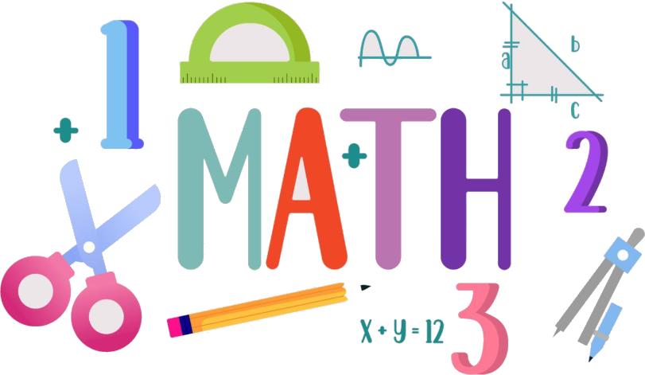

Math pour le lycée
Accueil
2nde
Arithmétique
Calcul algébrique
Droites du plan
Droites et systèmes
Ensemble de nombres
Probabilité et échantillonnage
Probabilité
Divers
Help
Math pour le lycée
Accueil
Math

Suivant »